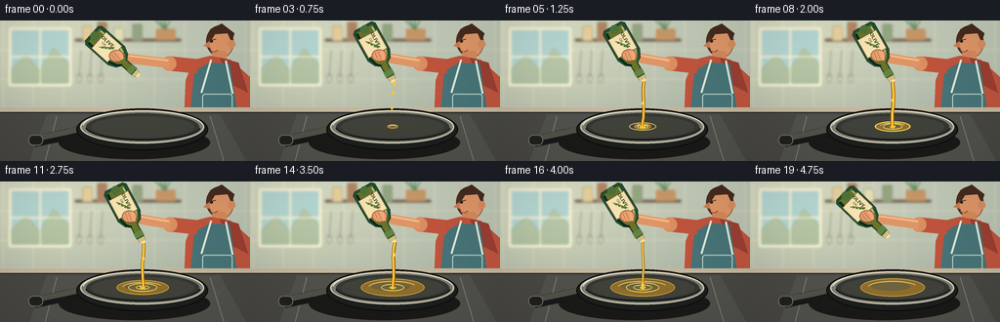
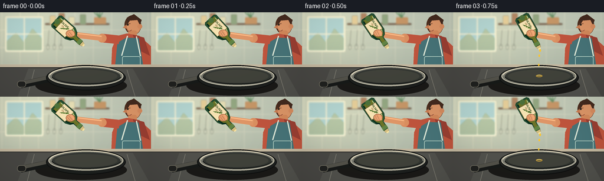

CODING AGENTS AS PIXEL WORLD MODELS
traex/GPT-5.6-Sol · motion_rationality_0013
点击播放 · 原生 RGB 像素
逐轮保存的候选
回放视频、检查图与代码变化。
每份候选均可单独播放。实际图片检查记录在下方工具轨迹中。
候选 01播放与检查图
点击播放 · 原生 RGB 像素


展开代码变化
--- 上一保存版本
+++ 本次保存版本
@@ -0,0 +1,334 @@
+from pathlib import Path
+import math
+
+import numpy as np
+from PIL import Image, ImageDraw, ImageFilter, ImageFont
+
+import artifact_io
+
+
+ROOT = Path(__file__).resolve().parent
+W, H, N = 256, 144, 20
+S = 4 # supersampling for smooth, cinematic edges
+
+
+def q(v):
+ return int(round(v * S))
+
+
+def box(x0, y0, x1, y1):
+ return tuple(q(v) for v in (x0, y0, x1, y1))
+
+
+def pts(values):
+ return [(q(x), q(y)) for x, y in values]
+
+
+def ease(x):
+ x = max(0.0, min(1.0, x))
+ return x * x * (3.0 - 2.0 * x)
+
+
+def lerp(a, b, t):
+ return a + (b - a) * t
+
+
+try:
+ FONT = ImageFont.truetype("/usr/share/fonts/truetype/dejavu/DejaVuSans-Bold.ttf", q(4.8))
+ SMALL = ImageFont.truetype("/usr/share/fonts/truetype/dejavu/DejaVuSans.ttf", q(3.6))
+except OSError:
+ FONT = ImageFont.load_default()
+ SMALL = FONT
+
+
+def thick_line(draw, xy, fill, width, joint="curve"):
+ draw.line(pts(xy), fill=fill, width=q(width), joint=joint)
+
+
+def background(frame):
+ """Warm modern kitchen, deliberately soft behind the action."""
+ hh, ww = H * S, W * S
+ yy, xx = np.mgrid[0:hh, 0:ww]
+ # warm daylight from the left, shaded turquoise tiles to the right
+ light = np.exp(-(((xx / S - 45) / 90) ** 2 + ((yy / S - 22) / 82) ** 2))
+ vertical = yy / hh
+ base = np.zeros((hh, ww, 3), dtype=np.float32)
+ base[..., 0] = 202 - 50 * vertical + 32 * light
+ base[..., 1] = 209 - 50 * vertical + 27 * light
+ base[..., 2] = 194 - 47 * vertical + 15 * light
+ im = Image.fromarray(np.uint8(np.clip(base, 0, 255)), "RGB")
+
+ soft = Image.new("RGBA", im.size, (0, 0, 0, 0))
+ d = ImageDraw.Draw(soft, "RGBA")
+ # tiled backsplash and seams
+ d.rectangle(box(0, 0, 256, 91), fill=(155, 180, 171, 76))
+ for x in range(3, 258, 31):
+ d.line([(q(x), 0), (q(x), q(91))], fill=(238, 239, 222, 50), width=q(.7))
+ for y in (30, 60, 90):
+ d.line([(0, q(y)), (q(256), q(y))], fill=(239, 240, 224, 50), width=q(.7))
+ # bright window frame at left
+ d.rounded_rectangle(box(8, 6, 74, 68), radius=q(3), fill=(226, 237, 218, 218), outline=(247, 242, 211, 190), width=q(2))
+ d.rectangle(box(12, 10, 70, 64), fill=(162, 206, 213, 210))
+ d.polygon(pts([(12, 49), (27, 35), (40, 51), (55, 28), (70, 44), (70, 64), (12, 64)]), fill=(115, 159, 128, 105))
+ d.line([(q(41), q(9)), (q(41), q(65))], fill=(244, 242, 218, 210), width=q(2))
+ d.line([(q(11), q(37)), (q(71), q(37))], fill=(244, 242, 218, 210), width=q(2))
+ # shelf, jars and a small herb pot
+ d.rounded_rectangle(box(76, 18, 186, 22), q(2), fill=(92, 67, 50, 180))
+ for x, col, ht in [(84, (222, 194, 133, 170), 17), (99, (154, 98, 62, 185), 21),
+ (116, (225, 220, 176, 175), 15), (135, (115, 145, 105, 180), 19)]:
+ d.rounded_rectangle(box(x, 22-ht, x+11, 21), q(2), fill=col, outline=(75, 68, 54, 85), width=q(.6))
+ d.rounded_rectangle(box(159, 8, 180, 20), q(2), fill=(188, 129, 75, 190))
+ for dx in (0, 5, 10, 15):
+ d.line([(q(169), q(9)), (q(159+dx), q(0))], fill=(55, 115, 64, 175), width=q(2))
+ # hanging utensils on left-center
+ for x in (83, 94, 105):
+ d.line([(q(x), q(30)), (q(x-2), q(58))], fill=(67, 76, 72, 115), width=q(1.3))
+ d.ellipse(box(x-5, 54, x+1, 64), outline=(67, 76, 72, 115), width=q(1.1))
+ soft = soft.filter(ImageFilter.GaussianBlur(q(1.3)))
+ return Image.alpha_composite(im.convert("RGBA"), soft)
+
+
+def draw_person(im, grip, frame):
+ """A cook on the right, looking toward the pan; arm terminates at bottle grip."""
+ d = ImageDraw.Draw(im, "RGBA")
+ # rear silhouette and torso
+ d.ellipse(box(211, 5, 239, 37), fill=(74, 45, 31, 255)) # hair halo
+ d.ellipse(box(214, 9, 239, 38), fill=(211, 147, 104, 255), outline=(114, 74, 52, 120), width=q(.8))
+ d.polygon(pts([(215, 9), (227, 3), (240, 13), (237, 22), (233, 13), (220, 14), (215, 22)]), fill=(66, 42, 31, 255))
+ # ear, neck
+ d.ellipse(box(233, 20, 241, 28), fill=(205, 137, 95, 255))
+ d.rounded_rectangle(box(217, 31, 232, 49), q(4), fill=(202, 134, 91, 255))
+ # shirt and shoulder
+ d.polygon(pts([(199, 40), (215, 36), (236, 40), (256, 58), (256, 111), (188, 108), (190, 61)]), fill=(181, 82, 61, 255))
+ d.polygon(pts([(225, 38), (244, 43), (254, 74), (234, 64)]), fill=(146, 61, 50, 190))
+ # apron
+ d.polygon(pts([(214, 43), (235, 44), (246, 112), (193, 112), (199, 52)]), fill=(67, 112, 119, 255))
+ d.line(pts([(216, 40), (206, 74)]), fill=(211, 226, 215, 215), width=q(2))
+ d.line(pts([(231, 41), (238, 75)]), fill=(211, 226, 215, 215), width=q(2))
+ d.rounded_rectangle(box(207, 75, 238, 95), q(3), outline=(177, 208, 199, 190), width=q(1))
+ # face: nose profile, eye aimed down-left, brow
+ d.polygon(pts([(214, 21), (208, 26), (215, 28)]), fill=(193, 122, 82, 255))
+ d.line(pts([(215, 20), (221, 19)]), fill=(79, 46, 33, 230), width=q(1.1))
+ d.ellipse(box(215, 20, 218, 22.5), fill=(42, 37, 31, 255))
+ d.line(pts([(214, 31), (220, 32), (223, 30)]), fill=(123, 60, 49, 215), width=q(.8))
+ # upper arm and forearm. Slight anatomical bend follows moving wrist.
+ gx, gy = grip
+ shoulder = (202, 47)
+ elbow = (174 + 0.08 * (gx - 132), 44 + 0.06 * (gy - 34))
+ thick_line(d, [shoulder, elbow], (182, 82, 61, 255), 15)
+ d.ellipse(box(elbow[0]-7.5, elbow[1]-7.5, elbow[0]+7.5, elbow[1]+7.5), fill=(207, 139, 96, 255))
+ thick_line(d, [elbow, (gx+4, gy+2)], (211, 145, 102, 255), 10)
+ # warm top-side highlight on arm
+ thick_line(d, [(elbow[0]-1, elbow[1]-3), (gx+3, gy-1)], (239, 181, 133, 125), 2)
+
+
+def pan_and_stove(im, frame, oil_amount, pouring):
+ d = ImageDraw.Draw(im, "RGBA")
+ # counter and range top
+ d.rectangle(box(0, 89, 256, 144), fill=(68, 69, 67, 255))
+ d.rectangle(box(0, 89, 256, 94), fill=(184, 177, 157, 255))
+ d.line(pts([(0, 94), (256, 94)]), fill=(34, 36, 35, 220), width=q(1))
+ # subtle stove perspective grooves and burner
+ d.polygon(pts([(30, 144), (48, 96), (225, 96), (252, 144)]), fill=(77, 79, 76, 255))
+ for x in (58, 215):
+ d.line(pts([(x, 98), (x-12 if x < 100 else x+14, 144)]), fill=(115, 116, 109, 125), width=q(1))
+ d.ellipse(box(84, 96, 205, 136), outline=(39, 42, 41, 230), width=q(3))
+ d.ellipse(box(99, 101, 191, 131), outline=(128, 124, 111, 115), width=q(1))
+ # pan cast shadow and long handle, all behind the bowl
+ d.ellipse(box(60, 108, 215, 142), fill=(25, 25, 23, 105))
+ thick_line(d, [(95, 111), (68, 117), (35, 124)], (22, 25, 24, 255), 12)
+ thick_line(d, [(91, 109), (65, 115), (36, 121)], (78, 79, 73, 255), 6)
+ d.rounded_rectangle(box(29, 117, 44, 128), q(5), fill=(30, 32, 31, 255), outline=(107, 106, 96, 190), width=q(1))
+ # outer skillet and raised rim
+ d.ellipse(box(78, 90, 213, 133), fill=(27, 30, 29, 255), outline=(12, 14, 14, 255), width=q(1.3))
+ d.ellipse(box(82, 92, 209, 126), fill=(116, 119, 111, 255), outline=(194, 194, 178, 210), width=q(1.5))
+ d.ellipse(box(88, 95, 204, 123), fill=(49, 53, 50, 255))
+ # radial interior lighting
+ d.ellipse(box(93, 98, 199, 120), fill=(61, 64, 58, 230))
+ d.arc(box(84, 92, 209, 126), 187, 348, fill=(220, 216, 192, 170), width=q(1.2))
+ d.arc(box(87, 94, 206, 123), 8, 173, fill=(13, 16, 15, 210), width=q(1.5))
+
+ if oil_amount > 0:
+ # The pool persists and grows as the pour continues.
+ rx = 5 + 28 * ease(oil_amount)
+ ry = 1.8 + 7.4 * ease(oil_amount)
+ cx, cy = 146, 108.5
+ oil = Image.new("RGBA", im.size, (0, 0, 0, 0))
+ od = ImageDraw.Draw(oil, "RGBA")
+ od.ellipse(box(cx-rx, cy-ry, cx+rx, cy+ry), fill=(218, 153, 31, 114), outline=(249, 200, 58, 190), width=q(.8))
+ od.ellipse(box(cx-rx*.68, cy-ry*.56, cx+rx*.55, cy+ry*.35), fill=(255, 215, 76, 52))
+ od.arc(box(cx-rx*.78, cy-ry*.72, cx+rx*.78, cy+ry*.72), 190, 335, fill=(255, 232, 127, 210), width=q(.65))
+ im.alpha_composite(oil)
+ d = ImageDraw.Draw(im, "RGBA")
+ # impact ripples: coherent expanding ellipses only while liquid lands
+ if pouring:
+ phase = (frame * .43) % 1.0
+ for off in (0.0, .52):
+ rr = (phase + off) % 1.0
+ rrx, rry = 3 + 16*rr, 1 + 4.5*rr
+ alpha = int(170 * (1-rr))
+ d.ellipse(box(cx-rrx, cy-rry, cx+rrx, cy+rry), outline=(255, 221, 100, alpha), width=q(.7))
+ d.ellipse(box(143.3, 106.7, 148.7, 110.2), fill=(250, 193, 52, 155))
+ return im
+
+
+def bottle_pose(frame):
+ """Rotate down, hold while pouring, then lift; spout remains over pan."""
+ if frame <= 3:
+ a = ease(frame / 3)
+ theta = lerp(42, 61, a)
+ spout = (lerp(139, 145, a), lerp(54, 59, a))
+ elif frame <= 15:
+ theta = 61 + 1.25 * math.sin(frame * .75)
+ spout = (145 + .7 * math.sin(frame*.55), 59 + .5*math.sin(frame*.8))
+ else:
+ a = ease((frame - 15) / 4)
+ theta = lerp(61, 44, a)
+ spout = (lerp(145, 139, a), lerp(59, 54, a))
+ return math.radians(theta), spout
+
+
+def draw_bottle(im, theta, spout, frame):
+ d = ImageDraw.Draw(im, "RGBA")
+ vx, vy = math.cos(theta), math.sin(theta) # base -> mouth
+ nx, ny = -vy, vx
+ px, py = spout
+
+ def p(s, n=0):
+ return (px + vx*s + nx*n, py + vy*s + ny*n)
+
+ # bottle body runs backward from spout; organic shoulder taper
+ silhouette = [p(-61, -10), p(-58, -13), p(-27, -13), p(-19, -9), p(-16, -4.2),
+ p(-2, -4.2), p(1, -3.4), p(1, 3.4), p(-2, 4.2), p(-16, 4.2),
+ p(-19, 9), p(-27, 13), p(-58, 13), p(-61, 10)]
+ # backlit olive liquid and glass
+ d.polygon(pts(silhouette), fill=(34, 76, 49, 248), outline=(14, 46, 32, 255))
+ inner = [p(-58, -9), p(-28, -10), p(-21, -7), p(-17, -2.9), p(-4, -2.9),
+ p(-4, 2.9), p(-17, 2.9), p(-21, 7), p(-28, 10), p(-58, 9)]
+ d.polygon(pts(inner), fill=(102, 112, 39, 150))
+ # green edge shadow and pale glass reflection
+ thick_line(d, [p(-57, 9), p(-29, 10), p(-20, 7), p(-16, 3)], (5, 40, 30, 205), 2.2)
+ thick_line(d, [p(-56, -8), p(-31, -9), p(-24, -7)], (166, 201, 144, 170), 1.4)
+ d.ellipse(box(p(-57)[0]-4.5, p(-57)[1]-4.5, p(-57)[0]+4.5, p(-57)[1]+4.5), fill=(74, 112, 59, 120))
+ # neck band and metal pour spout
+ d.polygon(pts([p(-9, -4.7), p(-3, -4.7), p(-3, 4.7), p(-9, 4.7)]), fill=(92, 127, 68, 220))
+ d.polygon(pts([p(-2, -4.2), p(2.4, -3.1), p(2.4, 3.1), p(-2, 4.2)]), fill=(198, 183, 126, 255), outline=(81, 73, 51, 220))
+ d.polygon(pts([p(2.2, -2.6), p(4.4, -1.7), p(4.4, 1.7), p(2.2, 2.6)]), fill=(235, 219, 160, 255))
+
+ # Cream paper label, aligned to the bottle axis.
+ label_poly = [p(-51, -11.2), p(-29, -11.2), p(-29, 11.2), p(-51, 11.2)]
+ d.polygon(pts(label_poly), fill=(235, 222, 179, 245), outline=(108, 90, 55, 230), width=q(.65))
+ # olive emblem
+ d.line(pts([p(-46, 5), p(-34, -5)]), fill=(70, 103, 49, 235), width=q(.9))
+ for ss, nn in [(-43, 3), (-40, 1), (-37, -1), (-35, -3)]:
+ c = p(ss, nn)
+ d.ellipse(box(c[0]-1.5, c[1]-1, c[0]+1.5, c[1]+1), fill=(84, 119, 50, 245))
+
+ # Render readable label words onto a small transparent patch, then rotate.
+ label = Image.new("RGBA", (q(25), q(12)), (0, 0, 0, 0))
+ ld = ImageDraw.Draw(label)
+ ld.text((q(1.8), q(.3)), "OLIVE", font=FONT, fill=(53, 75, 36, 255), stroke_width=0)
+ ld.text((q(6), q(5.5)), "OIL", font=SMALL, fill=(111, 75, 28, 255), stroke_width=0)
+ rot = label.rotate(-math.degrees(theta), resample=Image.Resampling.BICUBIC, expand=True)
+ lc = p(-40, -2)
+ im.alpha_composite(rot, (int(q(lc[0])-rot.width/2), int(q(lc[1])-rot.height/2)))
+
+ # gripping hand and separated fingers over the bottle
+ grip = p(-27, 0)
+ d = ImageDraw.Draw(im, "RGBA")
+ d.ellipse(box(grip[0]-7.5, grip[1]-6, grip[0]+8, grip[1]+6.5), fill=(214, 148, 103, 255), outline=(135, 82, 57, 190), width=q(.7))
+ for offs in (-4.1, -.8, 2.5):
+ a, b = p(-31, offs), p(-23, offs+1)
+ thick_line(d, [a, b], (233, 169, 121, 255), 2.2)
+ thick_line(d, [a, b], (121, 73, 52, 105), .45)
+ # thumb across neck-side of body
+ thick_line(d, [p(-29, -5), p(-20, -2)], (230, 164, 117, 255), 3)
+ return grip, (px + vx*4.2, py + vy*4.2)
+
+
+def stream_schedule(frame):
+ if frame < 3:
+ return 0.0
+ if frame == 3:
+ return .38
+ if frame <= 15:
+ return .9 + .1 * math.sin(frame * 1.1)
+ if frame == 16:
+ return .65
+ if frame == 17:
+ return .34
+ return 0.0
+
+
+def draw_stream(im, mouth, frame, strength):
+ if strength <= 0:
+ return
+ d = ImageDraw.Draw(im, "RGBA")
+ sx, sy = mouth
+ landing = (146.0, 108.0)
+ # Early/late pour is fragmented; sustained pour is a continuous gravity curve.
+ if strength < .5:
+ for j in range(3):
+ u = ((frame * .29 + j * .27) % .76) + .12
+ x = sx*(1-u) + landing[0]*u + 1.1*math.sin(frame*.8+j)
+ y = sy + (landing[1]-sy) * (u*u)
+ r = 1.15 + .45*(1-u)
+ d.ellipse(box(x-r, y-r*1.5, x+r, y+r*1.5), fill=(247, 189, 44, 235))
+ return
+ samples = []
+ for k in range(22):
+ u = k / 21
+ x = sx*(1-u) + landing[0]*u + math.sin(frame*.62 + u*7.0)*(.45 + .25*u)
+ y = sy + (landing[1]-sy) * (u**1.18)
+ samples.append((x, y))
+ # amber glow and bright center line
+ thick_line(d, samples, (124, 77, 8, 100), 3.8 * strength)
+ thick_line(d, samples, (242, 170, 25, 245), 2.5 * strength)
+ thick_line(d, [(x-.25, y) for x, y in samples], (255, 226, 105, 220), .75)
+ # occasional bead travels down stream to show flow direction
+ u = (frame * .31) % 1.0
+ x = sx*(1-u) + landing[0]*u
+ y = sy + (landing[1]-sy)*(u**1.18)
+ d.ellipse(box(x-1.25, y-2.0, x+1.25, y+2.0), fill=(255, 210, 71, 230))
+
+
+def render(frame):
+ theta, spout = bottle_pose(frame)
+ vx, vy = math.cos(theta), math.sin(theta)
+ grip = (spout[0] - vx*27, spout[1] - vy*27)
+ im = background(frame)
+ draw_person(im, grip, frame)
+
+ strength = stream_schedule(frame)
+ # cumulative amount remains in pan after the bottle lifts
+ if frame < 3:
+ oil_amount = 0
+ else:
+ oil_amount = min(1.0, (frame - 2) / 13.0)
+ im = pan_and_stove(im, frame, oil_amount, strength > .5)
+
+ _, mouth = draw_bottle(im, theta, spout, frame)
+ draw_stream(im, mouth, frame, strength)
+
+ # Foreground contrast vignette and soft warm color grade.
+ arr = np.asarray(im.convert("RGB")).astype(np.float32)
+ yy, xx = np.mgrid[0:H*S, 0:W*S]
+ dx = (xx - W*S*.50) / (W*S*.72)
+ dy = (yy - H*S*.50) / (H*S*.78)
+ vig = np.clip(1.04 - .13*(dx*dx + dy*dy), .82, 1.04)[..., None]
+ arr *= vig
+ arr[..., 0] *= 1.025
+ arr[..., 2] *= .975
+ out = Image.fromarray(np.uint8(np.clip(arr, 0, 255)), "RGB")
+ out = out.resize((W, H), Image.Resampling.LANCZOS)
+ return np.asarray(out, dtype=np.uint8)
+
+
+def main():
+ frames = np.stack([render(i) for i in range(N)], axis=0)
+ artifact_io.save(frames, ROOT)
+ print(f"saved {frames.shape[0]} RGB frames at {frames.shape[2]}x{frames.shape[1]}")
+
+
+if __name__ == "__main__":
+ main()
可观测工具轨迹
实际执行的命令与返回图片。
命令 1exit 0
/bin/bash -lc "cat prompt.txt && printf '\\n--- GENERATION_RULES ---\\n' && cat GENERATION_RULES.md && printf '\\n--- TASK_SPEC ---\\n' && cat task_spec.json"
命令 2exit 1
/bin/bash -lc "find . -maxdepth 2 -type f -printf '%p\\n' | sort && printf '\\n--- tools ---\\n' && command -v ffmpeg && command -v python3 && python3 - <<'PY' mods=['cv2','numpy','PIL','imageio','moviepy'] for m in mods: try: x=__import__(m); print(m, getattr(x,'__version__','ok')) except Exception as e: print(m,'MISSING',e) PY"
命令 3exit 0
/bin/bash -lc 'cat artifact_io.py'
命令 4exit 0
/bin/bash -lc 'for c in python3 ffmpeg convert; do printf "$c: "; command -v "$c" || true; done; python3 - <<'"'PY' mods=['cv2','numpy','PIL','imageio','moviepy'] for m in mods: try: x=__import__(m); print(m, getattr(x,'__version__','ok')) except Exception as e: print(m,'MISSING',e) PY"
命令 5exit 0
/bin/bash -lc 'python3 generate.py'
命令 6exit 0
/bin/bash -lc "python3 - <<'PY'
from pathlib import Path
import json, numpy as np
from PIL import Image
root=Path('.')
z=np.load('pixels.npz')['pixels']
print('packed',z.shape,z.dtype)
files=sorted(Path('frames').glob('*.png'))
print('pngs',len(files),Image.open(files[0]).mode,Image.open(files[0]).size)
a=np.stack([np.asarray(Image.open(p)) for p in files])
print('array',a.shape,a.dtype,'range',a.min(),a.max())
print('frame means',np.round(a.mean((1,2,3)),2).tolist())
print('mean abs diffs',np.round(np.abs(np.diff(a.astype(float),axis=0)).mean((1,2,3)),2).tolist())
# Verify packed RGB exactly round-trips artifact
r=((z.transpose(2,0,1)>>16)&255).astype('u1')
g=((z.transpose(2,0,1)>>8)&255).astype('u1')
b=(z.transpose(2,0,1)&255).astype('u1')
back=np.stack([r,g,b],axis=-1)
print('roundtrip exact',np.array_equal(a,back))
print('artifacts',[(p.name,p.stat().st_size) for p in [Path('pixels.npz'),Path('index.html'),Path('inspection.png'),Path('transition_check.png')]])
PY"命令 7exit 0
/bin/bash -lc "python3 - <<'PY'
# Report key authored trajectories for a motion-coherence audit.
import generate
for i in range(20):
t,s=generate.bottle_pose(i); strength=generate.stream_schedule(i)
print(f'{i:02d}: spout=({s[0]:5.1f},{s[1]:5.1f}) angle={__import__(\"math\").degrees(t):4.1f} stream={strength:.2f}')
PY"命令 8exit 0
/bin/bash -lc "python3 - <<'PY'
from PIL import Image
import numpy as np
for i in [0,2,3,4,10,16,17,19]:
a=np.array(Image.open(f'frames/{i:02d}.png'))
# Amber liquid occupancy in central pour/pan ROI, conservative threshold.
roi=a[55:122,125:180]
amber=(roi[:,:,0]>170)&(roi[:,:,0]>roi[:,:,1]*1.18)&(roi[:,:,1]>80)&(roi[:,:,2]<130)
stream=amber[:53].sum(); pool=amber[43:].sum()
print(i,'amber streamROI',stream,'panROI',pool,'unique',len(np.unique(a.reshape(-1,3),axis=0)))
PY
printf '\\nworkspace files:\\n'
find . -maxdepth 2 -type f -printf '%p %s bytes\\n' | sort | sed -n '1,60p'
printf '\\ngenerate syntax/import check:\\n'
python3 -m py_compile generate.py artifact_io.py
"保存候选 1 份；完成命令 8 次；可验证图片返回 0 张。原始 API 响应与完整日志保留在本地。